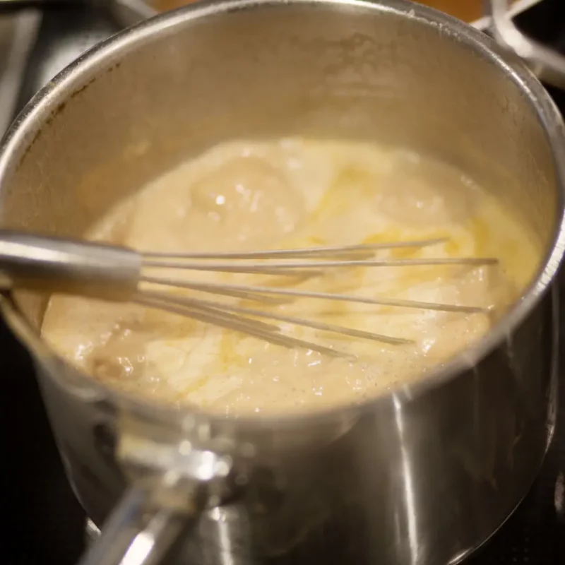
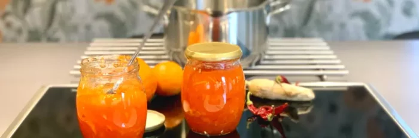

Ta Apelsin- och morotsmarmelad med sting istället–
Egen marmelad är en av våra absoluta favoriter och något som vi gör väldigt ofta. Går att variera i
oändlighet och man kan använda de ingredienser som själv tycker bäst om. Kombinationen apelsin och morot
ger
en perfekt mix av syra och sötma samtidigt som det ger marmeladen en fantastisk färg. För att spetsa
till
marmeladen så har vi tillsatt ingefära och chili så man får det där lilla extra för en riktig
smakexplosion.
Det här receptet går utmärkt att förändra genom att byta ut apelsin mot annan citrus som clementin eller
blodapelsin.
Gillar man inte hettan från chilin eller ingefäran så är det bara att plocka bort eller minska mängd.
Lycka
till🍊


Tvätta apelsinerna noga och skala av det yttersta skalet på 2 av apelsinerna som sedan strimlas ner fint.
Skala därefter apelsinerna med en kniv så att allt det vita är borta och där är endast rent fruktkött kvar. Tärna ner apelsinerna i centimeterstora bitar.
Skala morötterna och riv på rivjärnets fina sida.
Skala och riv ingefäran fint, hacka även igenom ingefäran med en kniv så att det inte är trådigt.
Finhacka chilifrukten för att sedan lägga den i en kastrull tillsammans med fruktkött och skal från apelsin, morötter, ingefära, syltsocker och vatten.
Sätt kastrullen på spisen och låt småkoka under omrörning i 15 minuter.
Skumma under tiden även bort slagg som lägger sig på ytan. Låt svalna lite innan det hälls upp i burkar.